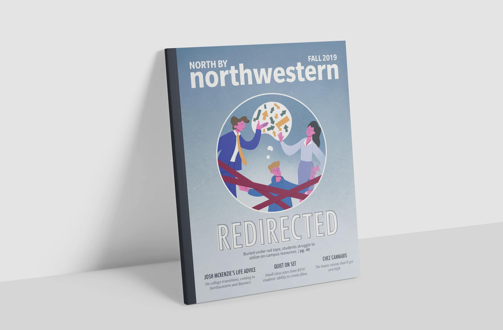
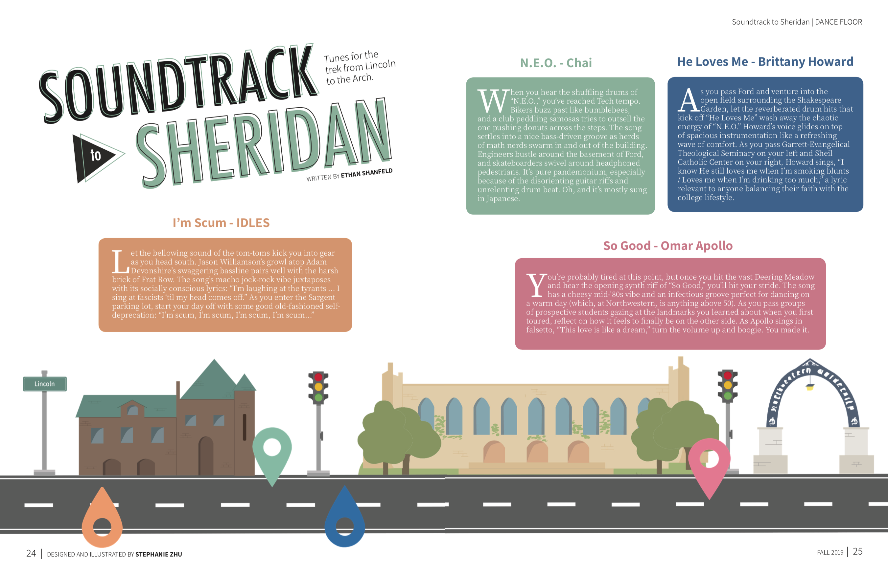
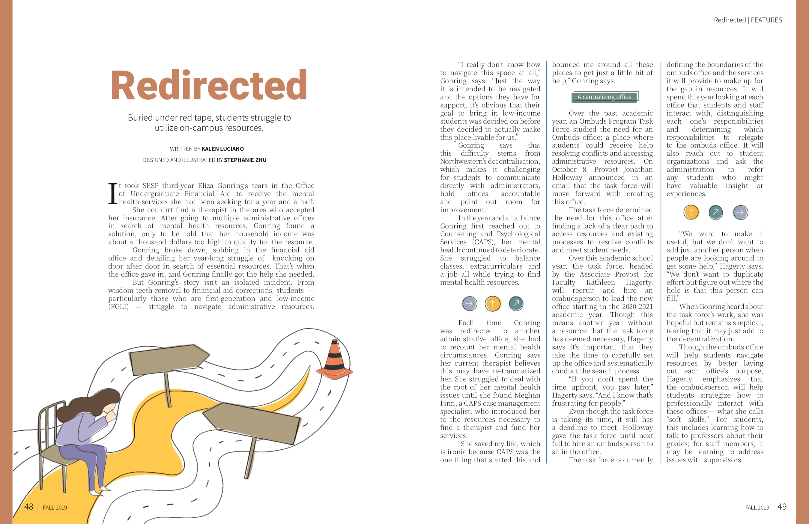
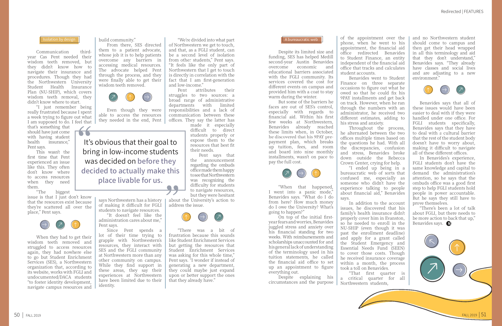

North by Northwestern is an online and print publication at Northwestern University. Every year, it publishes three completely student-produced magazine issues. In addition to overseeing the artistic direction for the fall 2019 magazine and leading the creative team, I also did some designing work. Here are some of my favorite layouts.
Soundtrack to Sheridan
Sheridan Road runs through the center of Northwestern's campus and on any given day, students can be seen walking along it, jamming to their tunes. I had fun picking a color scheme and creating illustrations that match the lighter nature of the story.

Redirected
Through design, I wanted to represent the flaws of the student resource system at Northwestern University. I also wanted the design to reflect the frustration that can be associated with seeking help on campus, hence the illustrations with imperfect lines and coloring.


Want to learn more about North by Northwestern? Check out the Twitter!